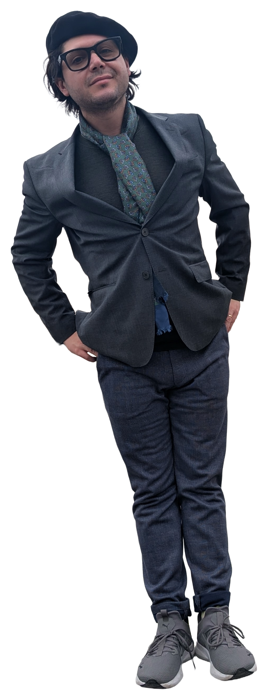

Identity / digital presence
A composed portfolio presence
An editorial-first digital experience that uses scale, whitespace, and careful motion to make personal expertise feel substantial.
For clients, collaborators, and employers seeking someone who can think across brand, business, aesthetics, and execution without turning the work into noise.
View selected work
My work sits at the intersection of visual design, business understanding, and cultural sensitivity. I care about how a project looks, how it feels, and what it communicates before a single conversation begins.
The goal is not decoration. The goal is credibility with atmosphere: clear enough for decision-makers, distinctive enough to be remembered.
An editorial-first digital experience that uses scale, whitespace, and careful motion to make personal expertise feel substantial.
Structured messaging and hierarchy designed to appeal to serious decision-makers while keeping the tone calm, luxurious, and human.
A multidisciplinary mindset spanning digital design, administrative rigor, and an appreciation for visual culture.
Refined, intentional, legible, and quietly confident. Less performance, more depth.
Clients, collaborators, and employers looking for mature taste, strategic awareness, and elevated execution.
Available for selected collaborations, design work, and thoughtful opportunities.
hello@pablo-studio.com